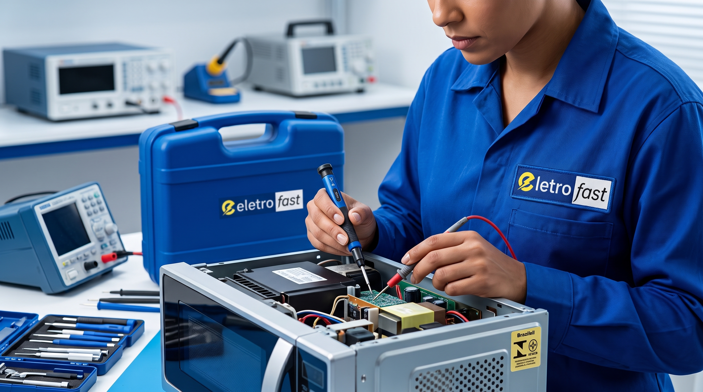

Consertar ou trocar? Como decidir quando o eletrodoméstico dá defeito

Quando um eletrodoméstico apresenta defeito, a primeira dúvida costuma ser: vale mais a pena consertar ou comprar um novo? Não existe uma resposta única — a decisão depende de alguns fatores que, juntos, mostram se o conserto compensa financeiramente e na prática.
1. Idade do equipamento
Equipamentos com menos da metade da vida útil esperada (a maioria dos eletrodomésticos de linha branca e embutidos dura entre 10 e 15 anos com uso e manutenção adequados) geralmente compensam o conserto, principalmente se o defeito for pontual e não estrutural.
2. Custo do conserto em relação ao valor de um novo
Uma regra prática usada no setor é: se o orçamento do conserto ultrapassa 50% do valor de um equipamento novo equivalente, vale considerar a troca com mais atenção — especialmente se o aparelho já tiver histórico de outros problemas recentes.
3. Disponibilidade de peças originais
Equipamentos de marcas com boa rede de assistência técnica e peças originais disponíveis tendem a ter conserto mais viável e com resultado mais durável. Já modelos descontinuados ou de marcas sem representação técnica local podem ter peças mais caras ou difíceis de encontrar, o que encarece o reparo.
4. Marca credenciada e garantia
Se o equipamento ainda está na garantia de fábrica, o conserto por uma assistência credenciada costuma ser a opção mais segura — evita custos e preserva a cobertura. Fora da garantia, vale confirmar se a marca é atendida por assistências especializadas antes de decidir.
5. Frequência de problemas recentes
Um equipamento que já teve mais de um defeito nos últimos meses pode estar no fim da vida útil de componentes-chave (como compressor ou placa principal), mesmo que cada conserto individual pareça barato. Nesses casos, vale considerar o custo acumulado, não apenas o do reparo atual.
Um checklist rápido
- O equipamento tem menos de 7-8 anos de uso? → conserto costuma compensar.
- O orçamento do conserto é menor que 50% do valor de um novo equivalente? → conserto costuma compensar.
- A marca tem peças originais disponíveis e assistência credenciada? → conserto costuma compensar.
- Esse já é o segundo ou terceiro defeito em pouco tempo? → vale considerar a troca.
Por que um diagnóstico profissional ajuda nessa decisão
Um orçamento claro, com o diagnóstico do problema e o valor do conserto detalhado antes da execução, é a informação que realmente permite comparar as duas opções com segurança — em vez de decidir só pela sensação de que "já é velho" ou "deve ser caro".
Não sabe se vale a pena consertar?
Fazemos o diagnóstico e apresentamos o orçamento antes de qualquer serviço, para você decidir com informação.
Veja como funciona nosso processo de atendimento na página Serviços ou confira se a sua marca está entre as marcas credenciadas pela Eletro Fast.